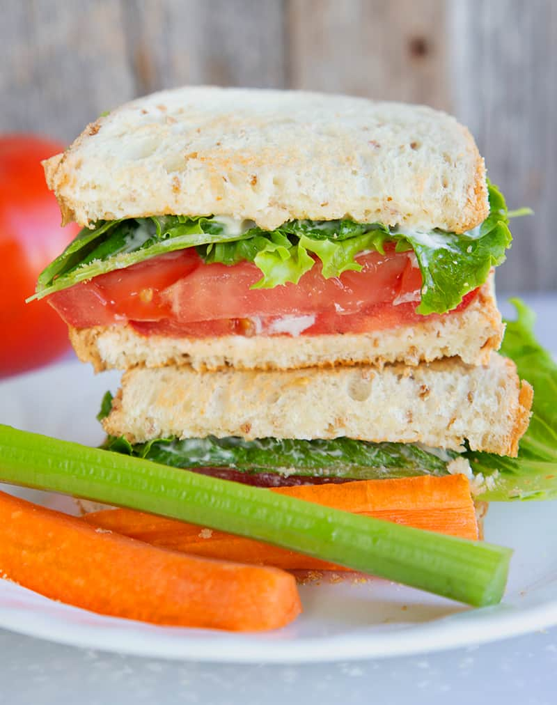

Toasted Tomato Sandwich

Description
This recipe is for an easy toasted tomato sandwich that's perfect for those hot summer months.
Ingredients
- 2 large tomatoes
- 4 tablespoons mayonnaise
- 8 slices of your favorite bread
- Salt and pepper
- Butter for the toast (optional)
- Lettuce
Steps
- Slice the tomatoes into 1/4 inch round slices and let drain slightly on a paper towel.
- Place your bread into your toaster and toast until it's crisp enough for your liking.
- Remove the toast and spread some butter on both slices if wanted, then slather with 1 tablespoon of the mayo as well.
- Place the tomatoes onto one slice. Salt and pepper to your liking.
- Place the second slice of bread on top and press down slightly. Cut the sandwich in half with a knife and serve.